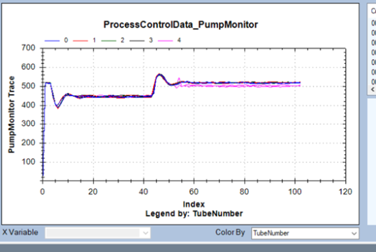
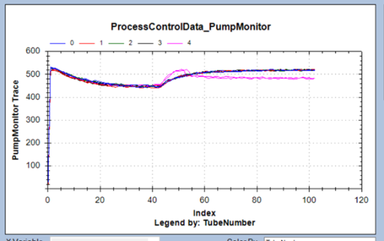

Oil – Good Curves vs. Bad Curves
This topic compares normal oil dispense curves with curves that result from faults. The first section explains how to identify oil dispense errors.
Oil Dispense Curves: Introduction
Oil dispense curves are useful for identifying a problematic oil pump, empty oil bottle, leaks in the oil line, a disconnected fitting, or a problematic oil solenoid valve.
Columns of Interest
Oil Dispense
If oil dispense errors are reported, note the pattern in faulted dispenses (ErrorCode = 2). Note the following occurrences:
-
Runs in which all oil dispenses are bad. This may indicate a bad sensor, or a leak in the lines.
-
Runs that start with good oil dispenses (ErrorCode = 0), then become bad, then become good again. This may indicate an oil bottle running dry before switching to the other bottle.
-
Runs that contain sporadic bad dispenses. This may indicate air bubbles in the line, faulty fittings or connections, or a bad sensor.
Normal Oil Dispense Curves
The graph below illustrates a normal oil dispense curve:

Oil – PCO – Running Out of Oil
The graph below illustrates a system that is running out of oil:

Oil – PCO – Bad Sensor or Empty Oil Bottle
The graph below illustrates a system that has a bad sensor, or is running out of oil:

Oil Pump Process Control
Graphs below compare good and bad curves for process control data.
Usual Error
Oil bottle A/B is empty or not connected, usually during Prime.
Good Curve
Upside-down square curve. Humps at the beginning and end are normal.

Bad Curve
Failing pump: not a nice, sharp upside-down square curve. Slope indicates either air is getting in, or the pump is failing.

 button at the top of the page to send feedback, comments, or change requests.
button at the top of the page to send feedback, comments, or change requests.